All DnD classes and subclasses explained
DnD classes are the defining feature of Dungeons and Dragons. They influence every dice you roll, every choice you make, from what stats you boost to how you take down an angry goblin. Picking your perfect class, then, is a pretty mighty task. This guide draws on our team's combined 70 years D&D experience to explain all 5e classes (and subclasses) in detail. Hopefully, it'll make that choice a little easier.
Once you've chosen a favorite among the Dungeons and Dragons classes, you can use our other expert guides to get game-ready. DnD backgrounds decide your character's starting ability scores and feats, while DnD races can add crucial abilities to your build.
How many DnD classes are there?
There are 13 Dungeons and Dragons classes. However, Wizards of the Coast is currently playtesting a potential 14th class, the Psion.
The core DnD classes are:
More on DnD classes:
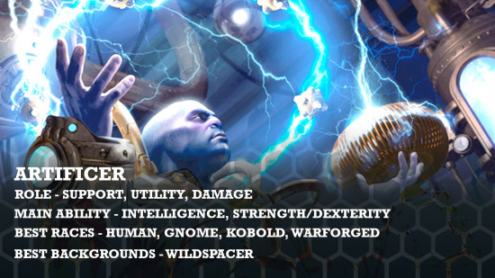
Artificer
A smarty-pants who loves to craft magic gear.
Overview: The Artificer is a tinkerer and a lover of tools. Using powerful magical infusions, they craft all manner of magical items that help your party pack a punch.
Strengths: Machines and engineering rarely feature in D&D, so the Artificer offers a unique theme. Its list of subclasses is varied, and, thanks to your many infusions, spells, and craftable items, there are heaps of customization options.
Weaknesses: If you're a beginner (or someone who doesn't enjoy agonizing over small details), the Artificer can feel overwhelming. Plus, it's stuck with some situational powers, and relying on the Intelligence stat limits their skill utility. The class may also feel wasted if your campaign doesn't pay attention to downtime, crafting, and magic items.
Subclasses:
- Alchemist: Gain additional healing powers and the ability to create random extra potions on the fly.
- Artillerist: Between Fireball and your literal Eldritch Cannon, you're built to rain hellfire (and heaps of damage) upon enemies.
- Armorer: Don heavy armor and dive into melee with your beefed-up armor class and magical weapons.
- Battle Smith: Gain a mix of spells, martial prowess, and a Steel Defender as your permanent companion.
- Cartographer: This Artificer uses magical maps to teleport all over the place.
- Reanimator: This Artificer uses lightning and dark knowledge to create grisly Flesh Golems.
See our Artificer 5e class guide for a full rundown.
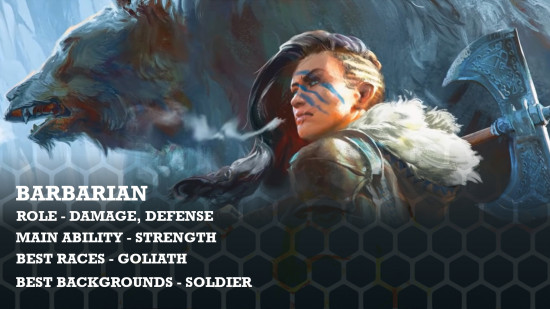
Barbarian
Get angry. Hit harder. Destroy all opposition.
Overview: With a chunky max HP and Rage-fueled attacks, the Barbarian can deal devastating damage in combat and is near-impossible to take down. Depending on your subclass, this martial machine brings total chaos or terrifying precision to an encounter.
Strengths: High hit dice and plenty of Rage mean the Barbarian is one tough cookie. It's satisfying to dominate the battlefield, as few classes can rival their damage output at early levels. This a strong yet simple class that's perfect for learning how to play Dungeons and Dragons.
Weaknesses: Barbarians are far weaker in combat with ranged foes. Plus, since they dump utility-focused mental stats, they have little use outside of battle. Their damage also scales fairly poorly compared with other martial classes, so they feel less impressive after a few DnD level ups.
Subclasses:
- Path of the Berserker: The angriest Barbarian, you can use your Rage to become an unstoppable, frenzied force.
- Path of the Wild Heart: You gain your pick of animal-themed powers, from damage resistance to flight.
- Path of the World Tree: A multidimensional tree bolsters your HP, and you can grab foes with its spectral branches.
- Path of the Zealot: You can infuse your weapon with holy power and heal wounds with your devotion.
- Path of the Spiritual Guardian (Path of the Ancestral Guardian): Commune with ancient spirits for protection, information, and even attacks on your behalf.
- Path of the Battlerager: A Dwarf-only subclass that's known for its spiky armor and unusual agility.
- Path of the Beast: These Barbarians shapeshift into beasts with extra-fearsome attacks, staggering agility, and the ability to curse their enemies.
- Path of the Giant: Grow large and throw elemental axes, or even throw other characters.
- Path of the Storm Herald: Create a stormy aura that deals out buffs and damage that only grow stronger over time.
- Path of Wild Magic: When they Rage, these Barbarians trigger random magical effects that are as useful as they are utterly chaotic.
- Path of the Elements: A new, elemental-themed Barbarian that creates combos for itself by chaining different damage types.
- Path of Lament: Currently in playtesting, these Barbarians commune with the dead and use Banshee-like abilities to devastate enemies.
See our Barbarian 5e class guide for a complete rundown.
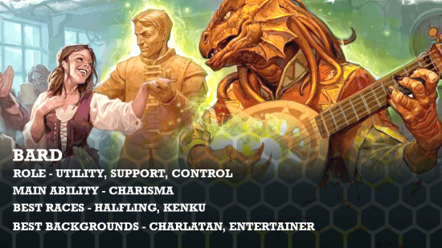
Bard
A charisma machine with endless spells and skills to support their pals.
Overview: Often the 'jack of all trades' of the adventuring party, the charming Bard is a versatile class that can be a huge benefit to teammates, both in battle and in social interactions. They tend to have more skill proficiencies than anyone else, a spell list packed with strong support options, and oodles of Charisma.
Strengths: Bards are masters of many different skills and spells, which means they've heaps of utility. They can be tweaked to fit whatever role your party is missing, and they can have their fingers dipped in many pies at once. Want to be the party Face but still feel powerful in combat? That's the Bard, baby.
Weaknesses: Bards can master a blade or hurl a Fireball, but they're usually outshone by classes that specialize. Plus, the Bard isn't the easiest class to optimize. It's easy for new players to misunderstand the class' core combat role and, rather than focusing on providing magical support, get stuck spamming Vicious Mockery when they run out of spell slots.
Subclasses:
- College of Dance: The power of busting a move makes you extra agile and capable of dealing devastating unarmed strikes.
- College of Glamour: Charm and frighten enemies with Fey magic while also making your friends great at their jobs.
- College of Lore: You know everything! That means lots of extra proficiencies, more spells, and improved odds on the dice.
- College of Valor: A sword-wielding Bard that comes armed with just as many battle-buffing spells.
- College of Creation: Animate ordinary objects, create items out of thin air, and use 'motes of potential' to hand out buffs and damage.
- College of Eloquence: These Bards are so persuasive that they can intercept enemies with a mere cutting word.
- College of Spirits: Call upon the spirits of the dead for extra spells, buffs, and dice to roll.
- College of Swords: You're as good a fighter as you are a singer, and your Bardic Inspiration buffs your attacks.
- College of Whispers: This Bard's repertoire includes psychic damage, causing fear, and manipulating shadows.
- College of the Moon: Attunement with the moon gives you additional powers - plus the chance to rain Moonbeam down on enemies.
See our Bard 5e class guide for more.
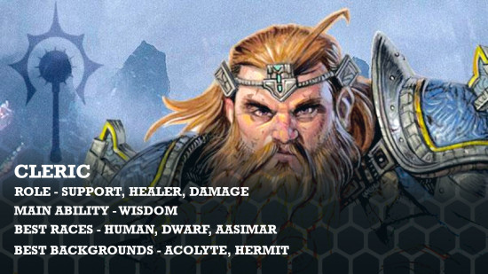
Cleric
Heal and harm with the power of faith.
Overview: The Cleric has been chosen by a god to act as their divine agent. Traditionally, the Cleric is a party's supporter and healer, but with so many subclasses to choose from, they can excel in most party roles.
Strengths: They're known for their incredible healing skills, but it's just as viable to create an offensive Cleric and deal impressive damage. Plus, as Wisdom spellcasters, Clerics have excellent utility skills and a better chance of staying stable when it comes to the game's favorite saving throws.
Weaknesses: Regardless of your character build, other players may expect you to focus on healing their combat-happy characters. The same might go for players assuming you chose a holier-than-thou alignment. Don't let this limit your storytelling - evil gods exist too!
Subclasses:
- Life Domain: You're the best healer that D&D has to offer.
- Light Domain: A Cleric whose command of light can be used to buff, burn, and blind targets.
- Trickery Domain: Use illusions to distract others and gain control of the battlefield.
- War Domain: The ultimate fighting Cleric, you're great at attack and defense, both with magic and weapons.
- Arcana Domain: Learn extra Wizard spells to protect friends from magical effects.
- Death Domain: A Cleric with power over life and death, you dole out necrotic damage and melee attacks in equal measure.
- Forge Domain: Don some magical gear and charge into battle, dealing extra fire damage along the way.
- Grave Domain: These Clerics use debuffs and empowered healing to maintain the balance between life and death.
- Knowledge Domain: These Clerics have many proficiencies, plus the ability to read minds and see visions of the past.
- Nature Domain: Command animals and plants to join your side, or charge into melee with heavy armor.
- Order Domain: Maintain order by empowering others, controlling enemy actions, and soaking up hits in heavy armor.
- Peace Domain: These Clerics are all about buffing and protecting their allies rather than dealing direct damage.
- Tempest Domain: Lightning and thunder damage are this Cleric's bread and butter. They're beefy and great at striking foes.
- Twilight Domain: You worship gods of the night and stars, and this gives you a jack-of-all-trades toolbox of buffs, damage, and utility.
- Discipline Domain: This Cleric balances offense and defense, with a little all-rounder utility thrown in, to boot.
- Shadow Domain: Turn into a horrifying shadow form and deal all manner of necrotic damage!
- Pestilence Domain: Currently in playtesting, these Clerics spread sickness rather than healing.
See our Cleric 5e class guide for more.
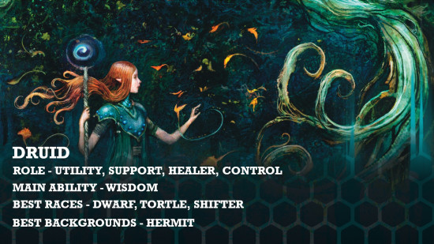
Druid
A steward of nature that excels in healing and battlefield control.
Overview: The Druid is proficient at morphing into beasts, healing, and controlling the elements. While Druids can deal serious damage with a claw slash or a burning Moonbeam, they're more adept at area control, allowing them to force foes into the path of their well-buffed adventuring pals.
Strengths: Druids are Wisdom-based spellcasters, so they're hardy in the face of saving throws and adept with some valuable non-combat skills. Combine this with the Druid's strong and varied subclasses, and you've a highly versatile class. Whether you want to be a frontline fighter or a supportive healer, the Druid has options for you.
Weaknesses: The Druid's low armor class and health make it one of the squishier classes to play. DMs can be very particular about that 'no metal' rule when it comes to armor, too, so you're extra vulnerable. Plus, while the Druid can access some truly awesome spells, many of them rely on concentration.
Subclasses:
- Circle of the Land: You can command nature to help you fight, and your connection with certain terrain types offer new spells.
- Circle of the Moon: A powerful all-rounder who can fight in Wild Shape and harness the powers of the moon.
- Circle of the Sea: Surround yourself with a damage-dealing tempest and cast heaps of storm-themed spells.
- Circle of the Stars: These Druids can embody different constellations that offer varied battle buffs.
- Circle of Dreams: Their ties to the Feywild give these Druids proficiency with teleportation, healing, and divination.
- Circle of Spores: These Druids can use fungal spores to protect themselves, deal necrotic damage, and resurrect the dead.
- Circle of the Shepherd: Animals and nature spirits can be summoned to help these Druids with healing, scouting, and battle.
- Circle of Wildfire: Gain a wildfire spirit summon that protects you from death, improves your spellcasting, and deals plenty of the fire damage.
- Circle of Preservation: Currently in playtesting, this Druid wants to protect and preserve the earth with its supportive and defensive spells.
- Circle of the Titan: Currently in playtesting, this Druid grows large and stomps around in a Godzilla-like titan form.
See our Druid 5e class guide for more.
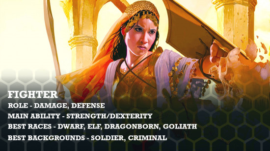
Fighter
Frighteningly good with any weapon they lay hands on.
Overview: A Fighter has more combat prowess than every spellcasting class put together. They're entirely designed around combat, which means they feel great to play during battle. Fighters get more attacks than anyone else, and they deal ridiculous levels of damage to single targets.
Strengths: Fighters are great options for new players thanks to their simplicity. That's not to say things can't get more advanced - there's a whole range of viable Fighter subclasses and character builds that add complexity. Fighters also have more ability score increases to play with, meaning you can shake things up even further by experimenting with feats.
Weaknesses: While you're a beast in battle, you're not great at much else. Playing a Fighter in a campaign focused on investigation or social intrigue may leave you twiddling your heavily-armored thumbs. The weapon mastery rules introduced in 2024 will help add some variety to the class, but this is still a fairly one-note option.
Subclasses:
- Battle Master: A tactics expert, you gain all sorts of special maneuvers, from disarming attacks to ambushes.
- Champion:The most Fighter-y of Fighters, your critical hits get more powerful and you get more of them, as well as near-unlimited re-rolls.
- Eldritch Knight:You gain magical as well as martial powers, firing off cantrips alongside your attacks.
- Psi Warrior: Protect yourself with a psychic wall of force, move objects with your brain, and force jump like a Jedi warrior.
- Arcane Archer: These Fighters imbue arrows with magic and use a variety of Arcane Shots to damage, debuff, and guarantee hits.
- Cavalier: Master mounted combat and defensive tactics that make you a serious threat to foes - and an even better friend.
- Banneret: These Fighters are charismatic knights who excel at inspiring their fellow combatants.
- Rune Knight: Grow to a mighty size and etch magical runes into your equipment that offer more damage and control options.
- Samurai: These Fighters are as swift as they are persuasive and disciplined - and they often attack with advantage.
- Echo Knight: Create echo copies of yourself that allow you to teleport and attack from ridiculous ranges.
- Gladiator: Currently in playtesting, this Fighter uses the power of performance to pull off particularly brutal strikes.
- Hellknight: Currently in playtesting, this Fighter's deals with the nine hells let them deal devastating Infernal Wounds.
See our Fighter 5e class guide for more.
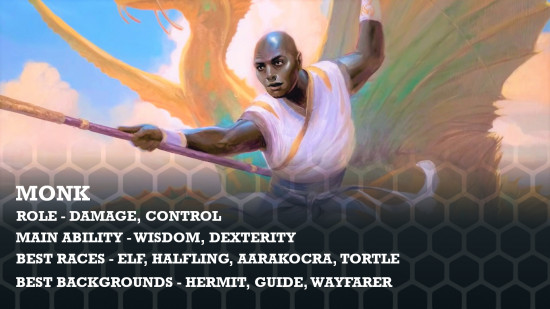
Monk
A disciplined warrior gifted with magical martial arts.
Overview: The Monk is the martial arts expert of the D&D world. Their discipline gives them a supernatural level of focus, which is represented mechanically by Focus Points. Spend these wisely, and the Monk becomes an agile, versatile, and formidable class.
Strengths: Monks may not always hit hard, but they hit often, getting multiple attacks earlier than most martial classes. Plus, when your weapons are your hands, you're never unarmed - that's useful in social scenarios or when the party gets captured. As Monks require strong Wisdom, Dexterity, and Constitution, you'll easily resist the common saving throws a DM throws at you. Spellcasters beware.
Weaknesses: In the 2014 Player's Handbook, the damage Monks deal can feel a little puny. Their Focus Points (formerly Ki) were the main event of the class, but they were surprisingly scarce, leaving the class feeling lackluster.
The newer sourcebooks fix a lot of these issues, but whatever version of the Monk you play, their armor class and hit dice leave them vulnerable. They get few proficiencies, and they're heavily reliant on three stats, which is challenging for new players to optimize and often rules out feats.
Subclasses:
- Warrior of Mercy: Heal with one hand and harm with the other, even raising the dead at high levels.
- Warrior of Shadow: Cloak yourself in magical darkness, attacking from a shadowy shawl of your own creation.
- Warrior of the Elements: Blast opponents with far-reaching elemental strikes and gain rocket-powered flight.
- Warrior of the Open Hand: A master of unarmed combat, you use your fists to trip or shove enemies, jump around like a ninja, and heal yourself with good, clean living.
- Warrior of the Mystic Arts: A spellcasting martial artist, similar in style to the Eldritch Knight.
- Way of the Ascendant Dragon: Channel draconic energy to deal elemental damage, frighten foes, and even grow wings.
- Way of the Astral Self: Gain spooky spectral body parts that enhance your attacks, skills, and defense.
- Warrior of Mystic Brews (Way of the Drunken Master): These Monks move like drunkards, but they're particularly agile and unpredictable.
- Way of the Kensei: These Monks master weapons as well as unarmed strikes, and they're formidable when wielding both.
- Way of the Long Death: Use yur understanding of death to siphon life from others and keep yourself standing.
- Way of the Sun Soul: Gain blazing ranged attacks that burn foes with blinding light.
- Warrior of Venom: Currently in playtesting, these Monks use their toxic touch to deal poison damage and manipulate foes.
See our Monk 5e class guide for more.
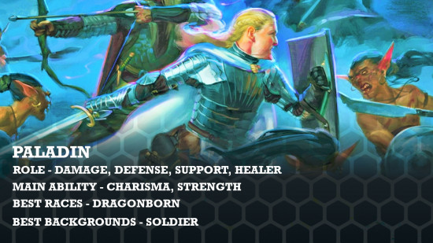
Paladin
Agent of a divine being that smites evil-doers with spells and swords.
Overview: The Paladin is a charismatic class that combines divine spellcasting with good old-fashioned melee fighting. Their holy ideals and high Charisma means they often take on leadership roles, juggling this along with healing, damage, and defense.
Strengths: The Paladin excels in striker and support mode, with strong damage and healing options in equal measure. They hit hard, they heal hard, and with chunky AC and armor proficiencies, they can tank pretty well too. Surely there's nothing a Paladin can't do?
Weaknesses: Ranged combat - that's one thing Paladins can't really do. They also aren't known for their stamina. A Paladin's limited spell slots, and most of their features, replenish on a long rest. That means they can feel feeble when facing multiple combat sessions in a single day.
Plus, Paladin players have a lot of ability scores to juggle. Strength and Charisma are the bare minimum, with Constitution also playing a major role. When your class can do everything, you've got to plan carefully to avoid getting spread too thin.
Subclasses:
- Oath of Devotion:Dedicated to justice and honor, your powers protect your allies from all dangers.
- Oath of Glory:A Paladin that's all about self-improvement. You can buff yourself and your friends with many boons.
- Oath of the Ancients:This Paladin loves the world as much as any Druid, wields nature-based magic, and is extremely hard to kill.
- Oath of Vengeance: A very angry Paladin that likes to be in the center of any fight.
- Oath of Conquest: War, glory, and order are the realm of the Conquest Paladin, who uses fear, control, and psychic damage to dominate.
- Oath of Redemption: Use magic to protect your friends, and give hostiles a chance to listen to persuasion before you punish them.
- Oath of the Crown: Heal and help friends while compelling enemies to face you in honorable (but deadly) duels.
- Oath of the Watchers: A jack-of-all-trades caster who's trained to deal with Aberrations, Celestials, Elementals, Fey, and Fiends.
- Oathbreaker: Paladins who break their oaths use fear and hatred to fuel necromancy and potent attacks.
- Oath of the Noble Genies: These Paladins' dedication to the elemental realm of genies grants you extra smites and spells to thwart foes with.
- Oath of the Ebon Blade: A Death Knight re-skin for D&D World of Warcraft, you use runes and necromancy to deal devastating damage.
- Oath of the Holy: A Paladin that's so good at healing, it almost rivals the Life Cleric.
See our Paladin 5e class guide for more.
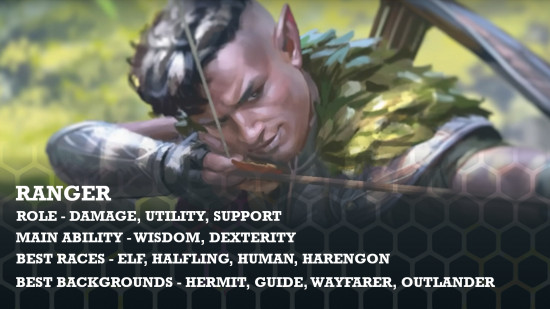
Ranger
An hunter and survivalist who loves an animal companion.
Overview: The Ranger is a hybrid class that has mastered exploration and the natural world. Part martial warrior, part scout, and part spellcaster, they can be versatile party members, able to provide ranged and melee damage, control spells, and heaps of utility.
Strengths: If you love exploration, travel, and tracking, there are few better options than a Ranger. They offer excellent spells for support and area control, and a range of strong Ranger subclasses allows you to specialize in your favorite roleplaying activities.
Weaknesses: A Ranger is part Druid, part Rogue, and part Fighter, but it rarely matches any of these classes in power. The problem with most 2014 Rangers is that they specialize too much. Some of the Ranger's main features are far too situational, and a player can easily pick up tricks they'll never need to use in a campaign.
The 2024 version is far stronger, but fans still aren't keen on how much the class requires you to concentrate on Hunter's Mark over your other Ranger spells.
Subclasses:
- Beast Master: A Ranger who's bonded with a mystical animal who fights alongside you in combat.
- Fey Wanderer: Use Fey magic to frighten or charm foes, summon a fairy to fight for you, and Misty Step all about the battlefield.
- Gloom Stalker: You can see in the dark, start combats with deadly ambushes, and send enemies running with scary Shadowfell magic.
- Hunter: Keeping things real, this Ranger forgoes magical tricks for special moves that make you a more effective fighter.
- Drakewarden: These Rangers gain a draconic companion that becomes a more effective ally as the Ranger grows stronger.
- Horizon Walker: Tricksy teleportation and force damage are the main tools for these Rangers.
- Monster Slayer: Your knowledge of monsters helps you single out targets, control the battlefield, and counteract magical attacks.
- Swarmkeeper: A swarm of tiny creatures performs tasks (and attacks with gusto) on your behalf.
- Winter Walker: These Rangers are hardy enough to track and hunt in the frozen tundras.
- Hollow Warden: These Rangers harness rot, shadows, and other horrid things to frighten and take down foes.
- Demon Hunter Ranger: A D&D World of Warcraft reskin, this Ranger uses soul fragments (and epic spells) to enhance their attacks and utility.
See our Ranger 5e class guide for more.
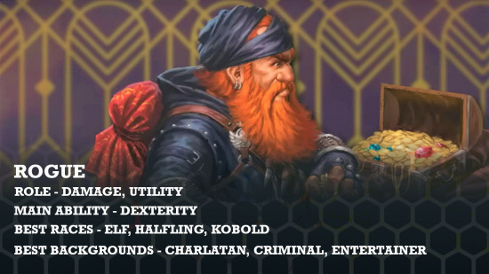
Rogue
You sneak, you steal, you stab people in the back.
Overview: As the name implies, the Rogue doesn't necessarily worry about rules when pursuing their goals. They're happy to pick locks, skulk in the shadows, hide messages in secret languages, and surprise enemies with a stab from behind. A Rogue can play the role of scout, thief, or deadly assassin, depending on your preference.
Strengths: The Rogue's utility in and out of combat makes them highly appealing, and they're capable ranged and melee attackers. Sneak Attack makes them formidable single-target strikers, particularly at low levels. Plus, their Cunning Action gives them more agility than anyone else on the field (except maybe the Monk).
Weaknesses: The cycle of 'hit then hide' that Cunning Action creates can feel a little repetitive at times. It can also be challenging to set up Sneak Attacks consistently, as they rely on your Rogue and other allies being positioned correctly or creating disadvantage for the target.
Rogues also suffer for being jacks of all trades, as it can mean they're 'masters of none'. Their damage output quickly falls behind more combat-dedicated classes, and characters with a bulked-out spell list can serve as equally good utility classes, if not better.
Subclasses:
- Arcane Trickster: A magical Rogue who can use a mystical Mage Hand for pranks, or even steal the spells right out of a Wizard's head.
- Assassin: The most murderous Rogue, you're all about attacking by stealth, using ambush and poison to dispatch your foes.
- Soulknife: Use the powers of the mind to alter your fate, talk telepathically, or just stab someone with a blade of psychic energy.
- Thief: The 'classic' Rogue, gifted in all things burglary. Climb any wall, spring any lock, and use any magic items carelessly left lying around.
- Inquisitive: You are a master of insight and investigation, and you can use your deductive powers to land more consistent Sneak Attacks.
- Mastermind: These Rogues excel in disguise and misdirection, and they're strong tactical supporters on the battlefield.
- Phantom: The spookiest of all Rogues, you can gain new skills and deal extra damage by communing with the dead.
- Scout: Extra nimble and adept at ambushes (particularly in the wilderness).
- Swashbuckler: You're a charming scoundrel who's as quick with their tongue as they are with a sword.
- Scion of the Three: This Rogue is dedicated to the most evil gods in D&D.
See our Rogue 5e class guide for more.
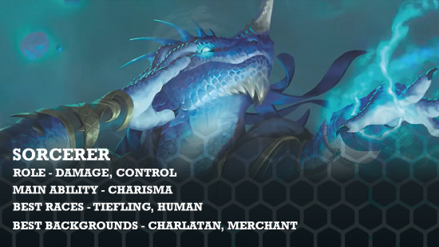
Sorcerer
So good at casting spells that you change how they work.
Overview: Unlike other spellcasters, a Sorcerer's powers come from raw ability. This unusual entry into the world of magic grants them a particularly impressive skill - the power to edit a spell in their repertoire as they cast it. Sorcery Points can make your spells snappier, sneakier, or generally more explosive.
Strengths: A Sorcerer's Metamagic abilities can transform the state of a fight in a single turn. Being able to improve the speed, success rate, reach, or duration of a spell opens up a huge number of possibilities, and the Sorcerer is a class that rewards creativity. A Sorcerer can become one of the best damage-dealers in D&D. Plus, thanks to their high Charisma, they've got plenty of usefulness outside of combat.
Weaknesses: This is a complex class that would suit only the most studious character builder. You've got a limited spell list to work with, plus fewer spell slots than other spellcasters.
The other downside is the consistency of a Sorcerer. A truly powerful turn uses up lots of resources, so you'll have plenty of less exciting turns in between to make up for your explosive actions. And, given the lack of armor and puny hit dice, a careless Sorcerer can easily get downed before they've had a chance to change the tide of battle.
Subclasses:
- Aberrant Sorcery: You're a telepathic Psionics expert who, at later levels, can transform your body in horrifying and interesting ways.
- Clockwork Sorcery: You value balance and order above all, and you can use your powers to manipulate dice rolls and combat situations.
- Draconic Sorcery: Grow dragon wings! Be friends with a dragon! And gain spells and resistances that are sort of related to dragons.
- Wild Magic Sorcery: Roll on a Wild Magic Surge table filled with random outcomes, as your powers are too chaotic to be controlled.
- Divine Soul: Touched by the divine, you gain holy wings, Cleric spells, and the power to change the fate of your failed rolls.
- Lunar Sorcery: Gain an expanded spell list and the power to modify spells for cheap, but your abilities change with the phases of the moon.
- Shadow Sorcery: The power of darkness increases your fortitude, lets you slip through shadows, and gives you a shadow hound buddy.
- Storm Sorcery: Fly, control the weather, and deal heaps of thunder and lightning damage.
- Spellfire Sorcery: These Sorcerers have a special connection to The Weave that expands their spellcasting repertoire.
- Ancestral Sorcery: Currently in playtesting, this is a classic Sorcerer that can call on their unique ancestry for extra knowledge, magic, and protection.
- Defiled Sorcery: Currently in playtesting, this Sorcerer corrupts its enemies with harsh debuffs and necromancy.
- Demonic Sorcery: Currently in playtesting, this Sorcerer is a wellspring of demonic debuffs.
See our Sorcerer 5e class guide for more.
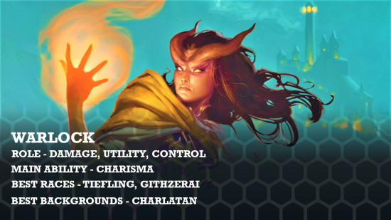
Warlock
Your pact with a powerful creature fuels your magic powers.
Overview: The Warlock formed a pact with an otherworldly patron, who in turn granted them bombastic spellcasting powers. Each Warlock has a different gimmick depending on the patron they've allied with. That could be a hellish fiend, a mischievous fey, or an unknowable horror from deep underwater.
Strengths: Being Charisma-based means Warlocks can easily become a passable party Face, and they've got so many customization options that none of your builds need to look the same. Warlocks are also a popular multiclass option for players who want to maximize damage (though this is less true in the 5.5e rules).
Weaknesses: Despite their deceptively easy spellcasting, Warlocks are a mechanically complex class. Additionally, the Warlock's spell slots are limited, and the amount of short rests you'll get to replenish them is at the mercy of your DM.
Subclasses:
- Archfey Patron: Serving a powerful Fey, you can blink around with an enhanced Misty Step and deal psychic damage to attackers.
- Celestial Patron: This Warlock gains extra radiant powers (and damage output) from a divine being like a unicorn or celestial.
- Fiend Patron: This Warlock serves a demon or devil, gains hit points from kills, and can use the luck of the devil to alter rolls.
- Great Old One Patron: This Warlock serves an eldritch elder being, granting them telepathy and a range of psychic spells.
- The Fathomless: A deep-sea being grants you tentacle summons, plus control over water, lightning, and thunder.
- The Genie: Choose one of four Genie patrons, each with their own unique spells, wish-granting powers, and magical genie vessel.
- The Hexblade: Your Warlock is built for juggling melee combat and spellcasting thanks to a pact with a dark Shadowfell creature.
- The Undead: These Warlocks rely on necromancy, fear, and the power to transform into spirits and undead.
- The Undying: An immortal patron helps you cheat death with a mix of necromancy, healing, and the ability to re-attach your own body parts.
- The Vestige: This Warlock gains powers from an upopular god trying to reclaim its fame - who also hangs around as your familiar.
- Sorcerer-King Patron: Currently in playtesting, this Warlock commands their friends and foes on behalf of a sinister, powerful patron.
- Primordial Patron: Currently in playtesting, gains attacks, defense, and teleportation from their deal with an elemental.
See our Warlock 5e class guide for more.
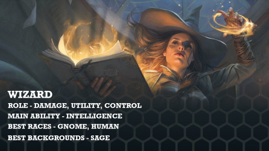
Wizard
The biggest book nerd in D&D, but also the most versatile spellcaster.
Overview: The Wizard is a studious magical genius who can access more spells than any other D&D class. Armed with their unique spellbooks, they have a range of battle strategies at their weave-powered fingertips.
Strengths: Thanks to their varied subclasses and a huge repertoire of spells, a Wizard can fill almost any role in a party. That being said, there are a handful in which they excel. Given how powerful Wizards are when they focus on control, utility, or damage, specializing is a strength for them rather than a setback. Few other spellcasters can replicate their abilities, and if they can, they can't perform them nearly as often.
Weaknesses: Puny hit points, poor saving throws, and the worst hit dice in 5e all make Wizards particularly vulnerable. The complexity of the class may also be off-putting for some. Managing your spellbook and spell slots requires plenty of thought, and the Wizard class is most rewarding when you've carefully planned for an encounter.
Subclasses:
- Abjurer: Deflect attacks with a powerful Arcane Ward, gain advantage on saves against spells, and cast powerful abjuration spells.
- Diviner: You gain access to Portent Dice, d20s that are rolled at the start of every day and can replace any standard d20 roll that's made.
- Evoker: Decimate your foes with aggressive elemental spells while ensuring your allies are protected from your waves of destruction.
- Illusionist: You gain extra summons to back you up in battle and illusions that help you stay on your feet.
- Bladesinger: These Wizards practice a style of magic that enhances their ability to wield a blade and lithely dodge attacks.
- Order of Scribes: You're so in tune with your spellbook that it can be used to modify the spells you cast from it.
- Conjurer: These Wizards specialize in conjuring handy objects or allies, and they can teleport with ease.
- Enchanter: Charm, hypnotize, and meddle with the memories of your enemies.
- Necromancer: You're extra-adept at stealing life from creatures to buff yourself and raising undead under your command.
- Transmuter: Transform both creatures and objects into something that better suits your designs.
- War Magic: A mix of evocation and abjuration prowess makes War Wizards great at offense and defense on the battlefield.
- Chronurgy Magic: Literally manipulate time to exert control over enemies, spells, and dice rolls.
- Graviturgy Magic: These Wizards alter gravity, giving them huge amounts of control in combat.
See our Wizard 5e class guide for more.
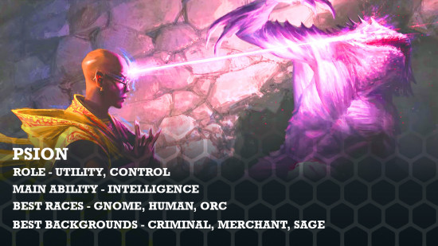
Psion
A psionic caster who is the definition of mind over matter.
Overview: The Psion is fifth edition's first new class since the Artificer, and it's currently undergoing playtesting. These adventurers are all about mind over matter, and their defining feature is a pool of Psionic Energy Dice, which represent the Psion exerting their extraordinary mental energy. Though this class does have the potential to deal damage, it mainly focuses on controlling the battlefield.
Strengths: The Psion is a thematic class with varied and flavorful subclasses. With a pool of dice and a full caster's spell list to play with, this class has a huge number of resources - even before higher levels make it easy to reclaim Psionic Energy Dice. The Psion's unique Wild Talent feats aren't super strong - but Cryokinesis is a stand-out choice, giving you two free, decent spells to cast.
Weaknesses: So far, the first version of this class seems to lack damage outputs that scale well as they level. A handful of mid-to-high-level spells that deal psychic damage do not make a Blaster class. They are also a classic full caster, meaning they have little to no defenses when it comes to taking damage. The poor Psion doesn't even get Shield on their spell list to keep the martials at bay.
Subclasses:
- Metamorph: Mold your body into a literal weapon and alter the shape and material your body is made of to gain extra benefits.
- Psi Warper: Manipulate the world around you to your advantage, including by tossing enemies around with telekinesis.
- Psykinetic: Modify your psionic abilities to gain additional buffs for your group and debuffs for your foes.
- Telepath: Infiltrate the minds of others with ease, confuse your enemies, and use your mental prowess to boost your utility options.
How to choose DnD classes
If you don't already have a character concept, consider the role you'd like to play in your adventuring party. In D&D, party roles are defined terms rather than abstract ideas. The community uses these terms to define a character's typical activities:
- Blaster - Drop enormous area-of-effect spells to damage as many targets as possible.
- Control - Spellcasters that use debuffs and area control to disadvantage enemies.
- Defender - The tankiest adventurers who soak up serious damage - or prevent enemies from attacking.
- Face - Masters of Charisma-based skills and social interactions.
- Healer - Restore a team's hit points by magical means.
- Scout - Experts in stealth, navigation, infiltration, and trap-disarming.
- Striker - Masters of single-target damage that's usually from a martial weapon.
- Support - Buff your friends and debuf foes to give your side maximum advantage.
- Utility - These classes handle any non-combat problems the party might face.
It's recommended that your group has a good spread of party roles rather than a bunch of classes that fill the same niche.
Can I choose more than one DnD class?
You can play a 'multiclass' character by gaining levels in more than one of the DnD classes. On each level up, you can simply choose to gain a level in a different class, rather than the one you started with. The only rule is that your character's core ability scores meet the minimum ability score requirements for the class you want to 'dip' into.
See our DnD multiclassing guide for a complete how-to.
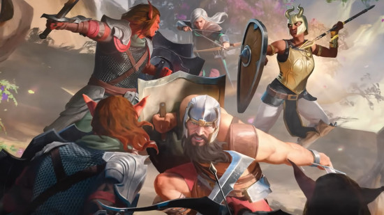
What are the best DnD classes?
DnD classes are so varied that there is no single strongest class. The kind of campaign you are playing in will often impact how useful your class feels. However, when power-builders discuss their go-to classes, a few spellcasters take the top spots: the Wizard, Bard, and Cleric.
These are what we'd consider the top tier of DnD classes, but here's a fuller view of how we'd rank each class as they appear in the 2024 Player's Handbook:
| Rank | Classes |
| S | Wizard, Bard, Cleric |
| A | Fighter, Sorcerer, Warlock |
| B | Monk, Paladin, Druid |
| C | Ranger, Artificer |
| D | Rogue, Barbarian |
S Tier
The trio in the top spot are here because they are good at pretty much everything. Each is a full caster with no restrictions on their powers other than spell slots. Whether you want a character that excels at damage, control, utility, or support, these classes have you covered.
And boy, we can't overstate just how good these classes are at those jobs. A Fighter might be able to attack four times in a turn, but that's child's play in the face of a Wizard who can create an entire second version of themselves, trap the enemy with an invisible wall, mind control them into standing still, and then bombard them with Fireballs.
A Tier
That being said, a Fighter is pretty damned good at dealing damage. So much so that we'd consider it a worthy alternative to playing some of the more restricted full casters in the class list. It's far less versatile, but you specialize in being truly excellent at, arguably, the most important part of a combat-focused exploration game.
Sorcerers and Warlocks are in this tier for a lot of the same reasons as the spellcasters above: magic equals power and flexibility. These DnD classes have more limitations, however. Both can be explosive in their power levels, but they're less consistent overall.
B Tier
Most of the other martial classes end up here. The damage they deal is still impressive, and they're essential members of a party (especially if there's no Fighter). However, their builds can't quite reach the levels of ridiculous that Fighters can. These are the kinds of classes that are perfectly playable, but they're not going to get many min-maxxers hot under the collar.
Similarly, Druids may be full casters, but their spell lists and subclasses are a lot more hit-and-miss than their rival classes. They're excellent for healing and control, but both of those roles can be performed by a Wizard or Cleric, and both often do it better.
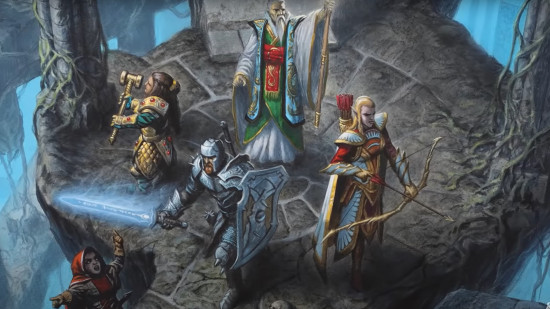
C Tier
At C tier, the classes get more inconsistent. The Ranger and the Artificer can both be incredibly effective in the right situations (and the right player's hands), but those moments are farther and fewer between than for most other DnD classes.
That being said, we might change things around once the new rules for the Artificer drop. This class is at a big disadvantage right now as the only one not updated in line with the new rules. However, its playtests showed some magic item crafting abilities that could quickly go off the rails in terms of power.
D Tier
In the current DnD 2024 rules, the Rogue is generally agreed to be the weakest in terms of overall damage output. While the new Weapon Mastery system helps out Rogues a fair bit, their best combat abilities are still held up by saving throws, and their limited access to spellcasting via specific subclasses puts them far behind the pack.
The Barbarian's biggest problem is that, as you level up, its damage output begins to pale in comparison to other martials. Its fighting-first archetype suddenly starts to look bland and situational, and there aren't many interesting ways to spice things up with subclasses.
And that's it for our complete rundown of the Dungeons and Dragons 5e classes, for now! If you have a character build you'd like to workshop, join us in the Wargamer Discord, where we regularly discuss our Dungeons and Dragons games.
Originally published on Wargamer.


Leave a Comment